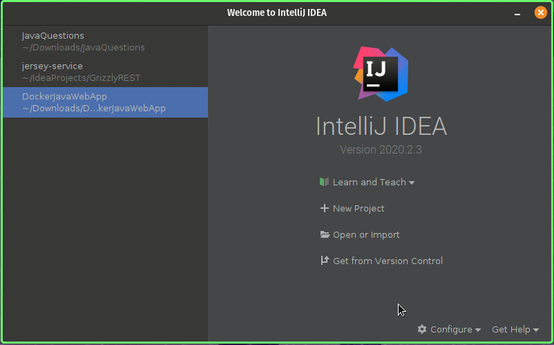
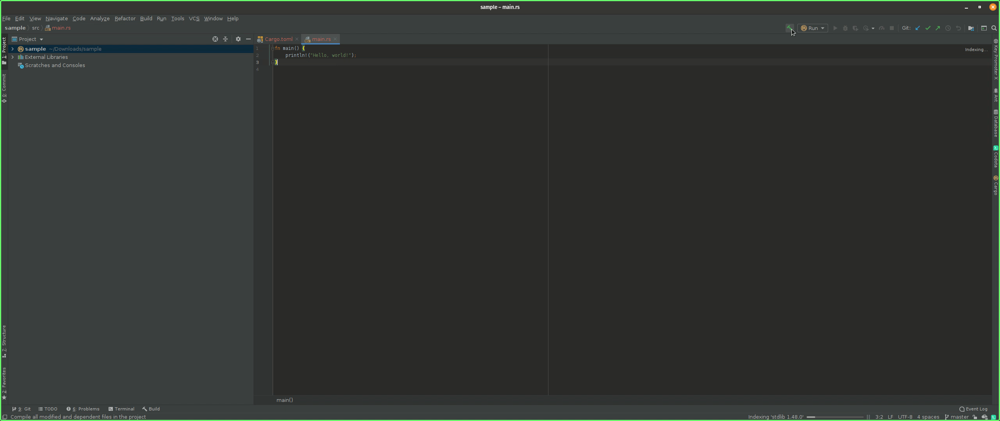
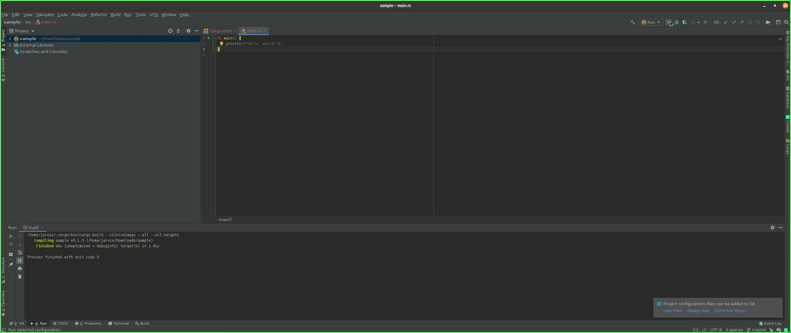
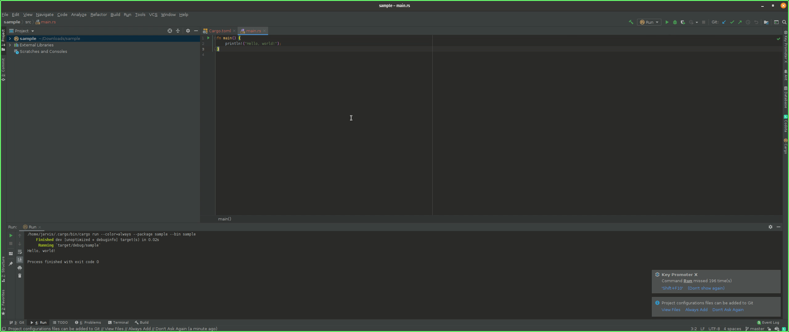

Installing Rust in Ubuntu¶
Open terminal and enter the following command
curl https://sh.rustup.rs -sSf | sh
Choose ‘Proceed with installation (default)’ by entering 1
You should get a message after installation saying:
Rust is installed now. Great!
Add the following line to your ~/.bash_profile :
export PATH=”$HOME/.cargo/bin:$PATH”
Run the following command :
sudo cp ~/.cargo/bin/rustc /usr/local/bin/
Run the following command to check if Rust is installed successfully :
rustc --version
Running Rust Sample Project in IntelliJ IDEA
Open IDE.
Go to Plugins.
Search for Toml, Rust and Rainbow Brackets and install them.
Restart the IDE and click New Project.
Select Rust.
Name your project.

The project will be shown as this. Build the project.
Run the Project.
The output will be displayed as shown below.
